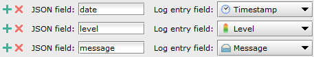
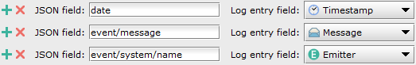
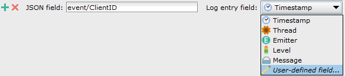

LogMX JSON Parsers
If your logs files are using a JSON syntax, you can use LogMX JSON parsers to extract a list of
JSON fields to build log entries.
To create or edit a LogMX JSON Parser, go to menu "Tools", item "Options", then tab "Parsers".
Table of contents:
Example 1 - Simple JSON structure
{
"date" : "01/05/2020 10:12:32",
"level" : "INFO",
"message" : "Hello, world!"
}
You can extract the following JSON fields to associate them with these log entry fields:
| JSON field |
Log entry field |
Log entry field value |
| "date" |
Log entry date |
01/05/2020 10:12:32 |
| "level" |
Log entry log level |
INFO |
| "message" |
Log entry message |
Hello, world! |
For that, you can set up the LogMX JSON Parser this way:

Note: The whole log file doesn't have to be a valid JSON structure,
but each individual JSON object you want to use (to build log entries) should be a valid JSON structure.
For example, if the log file starts with the character '[' to start an array,
this file doesn't have to finish with ']' to be parsed (a lot of JSON files are actually not valid
JSON because they are written as streams and the nature of JSON syntax makes it hard
to keep the root object/array always closed).
Example 2 - Nested JSON objects
{
"date" : "01/05/2020 10:12:32",
"event" : {
"message" : "Hello, world!",
"system" : {
"name" : "System 1",
"SN" : "FSG423"
}
}
}
You can extract the following JSON fields to associate them with these log entry fields:
| JSON field |
Log entry field |
Log entry field value |
| "date" |
Log entry date |
01/05/2020 10:12:32 |
| "event/message" |
Log entry message |
Hello, world! |
| "event/system/name" |
Log entry emitter |
System 1 |
For that, you can set up the LogMX JSON Parser this way:

In order to point a specific JSON child object, LogMX uses "JSON pointers", as described by RFC 6901
(see https://tools.ietf.org/html/rfc6901).
The only difference between RFC 6901 JSON pointers and LogMX JSON pointers is that the first leading
slash '/' is optional for LogMX (mandatory in RFC 6901). That is why the examples given on this page use JSON field pointers
like "event/message" (it doesn't start with '/').
Using "/event/message" would also work. This is to keep LogMX
Parsers more intuitive, and also to represent the "relative" handling of JSON objects: these fields
pointers are not "absolute" starting at the document root, but are relative to any arbitrary JSON object
used to extract log entries.
Note: In order to create your Parser faster, you can ask LogMX to generate the list of all
the fields present in your logs. To do so, paste a few log entries in the blue text area
("Parser test" panel), then click on the button "Generate fields from logs sample below".
All the fields will then be present at the top of the window: simply choose a log entry field to
associate to each JSON field, and remove the fields you don't want to ingest.
LogMX JSON Parsers also let you extract data from arrays, as described in RFC 6901.
For example, to parse the following JSON log file:
{
"date" : "01/05/2020 10:12:32",
"event" : {
"message" : "Hello, world!",
"system" : {
"names" : ["System 1", "Sys1", "ABD1"],
"SN" : "FSG423"
}
}
}
You can extract the following JSON fields to associate them with these log entry fields:
| JSON field |
Log entry field |
Log entry field value |
| "date" |
Log entry date |
01/05/2020 10:12:32 |
| "event/message" |
Log entry message |
Hello, world! |
| "event/system/names/1" |
Log entry emitter |
Sys1 |
Example 4 - Special characters in JSON field names
| JSON field character |
JSON pointer character |
Example |
| / |
~1 |
"P/N" 🡆 "P~1N" |
| ~ |
~0 |
"A~B" 🡆 "A~0B" |
| \\ |
\ |
"A\\B" 🡆 "A\B" |
| \" |
" |
"A \"quoted\" word" 🡆 "A "quoted" word" |
Note that as of April 2020, the last two cases are still not officially part of RFC 6901,
but an Errata to fix this RFC has been reported (see
Errata-5745).
We believe that "\\" is the escaped string for the
"\" JSON character,
so the JSON pointer should be "\" instead of
"\\" as suggested by RFC 6901 (same reasoning for
"\"").
Example 5 - User-defined log entry fields
